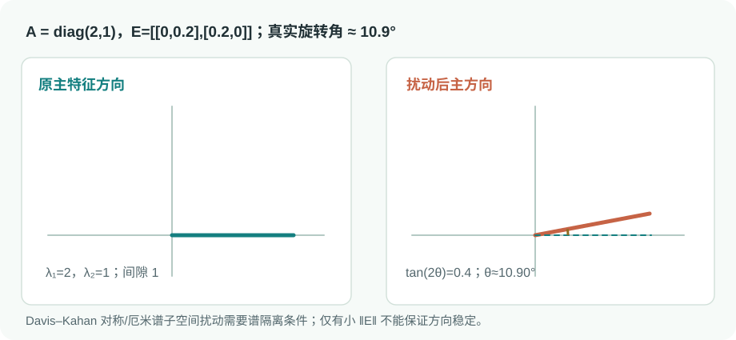
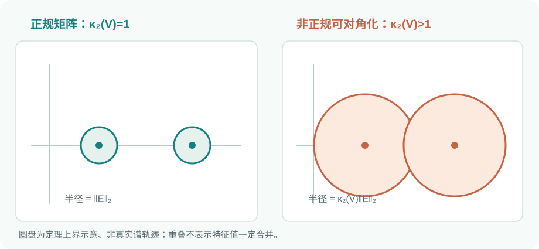

01 / 小扰动为什么可能令特征向量大幅旋转？
实对称矩阵 A=diag(2,1) 的第一特征向量是 e₁。若加入 E=[[0,0.2],[0.2,0]]，新主特征方向旋转约 10.90°。矩阵条目仅变化 0.2，却会改变方向；若两个原特征值更接近，同样大小的扰动通常可能造成更剧烈的方向变化。谱间隙与扰动量共同决定稳定性。

为清晰区分：特征值扰动问 λ 变化多少；特征向量扰动问方向变化多少；条件数问问题本身对输入变化有多敏感。不同问题需要不同的界与假设。
02 / Weyl 定理为什么能紧紧约束对称特征值？
对两个实对称（或复 Hermitian）n×n 矩阵 A、E，把 A 和 A+E 的特征值分别按降序排列，Weyl 扰动不等式给出每个对应序号的偏移不超过算子 2-范数：
本例原特征值 (2,1)，新特征值是 1.5±√(0.25+0.04)，约为 (2.038516,0.961484)，移动量都只有约 0.038516，不超过 ‖E‖₂=0.2。Weyl 约束特征值，不直接约束特征向量方向。
同样的扰动思路对奇异值也有对应形式：|σᵢ(A+E)−σᵢ(A)|≤‖E‖₂，后者可以应用于矩形矩阵 A、E，切勿误把奇异值界写成只能对方阵使用。
03 / Davis–Kahan：为什么需要说明谱间隙？
设 A 与 Â=A+E 均为实对称矩阵，u 是 A 的单位特征向量，对应简单特征值 λ；ũ 是 Â 的单位特征向量，对应特征值 μ。若 μ 与 A 的其他特征值间隔至少 δ>0，利用在 A 特征基上分解 ũ，可得一个明确的残差型角度界：
这里 θ 是 u 与 ũ 的锐角（忽略特征向量正负号），δ=min_{j≠i}|μ−λⱼ(A)|。这一定义非常重要：它并不是随便把原矩阵两个特征值相减就直接代入。若原谱间隙为 gap 且 ‖E‖₂<gap，可结合 Weyl 界得到保守下界 δ≥gap−‖E‖₂（针对正确对应的简单特征值）。
本例 gap=1、‖E‖₂=0.2，故可用 sinθ≤0.2/0.8=0.25；真实 sin(10.90°)≈0.189。高维子空间使用 principal angles / sinΘ 矩阵，需清楚声明所选不变子空间和隔离范围，不能把单向量公式无条件套用到重特征值。
04 / Bauer–Fike 为什么把特征向量的病态性暴露出来？
对非对称但可对角化的复方阵 A=VΛV⁻¹，任意扰动 E 后 A+E 的任意特征值 μ，至少靠近 A 的一个特征值 λ：

例子 A=[[2,6],[0,1]] 有特征值 2、1，尽管彼此距离 1，特征向量基明显非正交。加入 E=[[0,0],[0.01,0]] 后，特征值变成 (3±√1.24)/2，约为 2.056776、0.943224：‖E‖₂=0.01，特征值却移动约 0.0568。这不违反 Bauer–Fike，因为 V 的条件数大于 1。
05 / 算法稳定性、前向误差与特征值敏感性
线性方程的条件数 κ₂(A)=σmax(A)/σmin(A)（非奇异方阵）刻画输入相对误差和输出相对误差的可能放大；但非正规特征值问题的敏感性不应只使用这个 κ₂(A)。对简单特征值 λ，若右特征向量 x 与左特征向量 y 归一化，且 y*x≠0，其一阶扰动满足 δλ≈(y*Ex)/(y*x)，因而出现特征向量夹角相关的敏感度。
如果算出的答案满足较小后向残差，并不能直接推出小前向误差：病态问题会将很小的输入等效误差放大。这是数值优化、矩阵函数、稳定特征子空间计算中的共同设计原则。
06 / 标准库核验：Weyl 界与非正规反例
from math import sqrt, atan, sin
eps=.2
# A=diag(2,1), E=[[0,eps],[eps,0]]
new_hi=1.5+sqrt(.25+eps*eps)
new_lo=1.5-sqrt(.25+eps*eps)
theta=.5*atan(2*eps)
assert abs(new_hi-2)<=eps
assert abs(new_lo-1)<=eps
assert sin(theta)<=eps/(1-eps)
# A=[[2,6],[0,1]], E=[[0,0],[0.01,0]]
delta=.01
mu_hi=(3+sqrt(1+24*delta))/2
assert mu_hi>2+delta
print("Weyl shift",round(new_hi-2,6),
"angle degrees",round(theta*180/3.141592653589793,4),
"nonnormal shift",round(mu_hi-2,6))预期 Weyl 移动 0.038516、角度 10.9007°、非正规矩阵移动约 0.056776。反例表明对非正规矩阵，不能将 Hermitian 特征值的 ‖E‖ 界原样照搬。
参考资料与定理条件
- Cornell CS 6210：矩阵特征子空间扰动与 Davis–Kahan
- Cornell CS 6210：Bauer–Fike 与非正规矩阵
- MATH0058：Eigenvalue Perturbation Theory
示例中有意使用可复算的小矩阵；文中的定义、条件与界限适用于所声明的矩阵类别，而不是来自图示的统计结论。